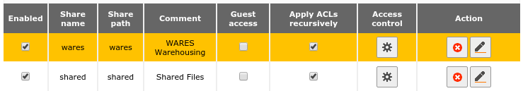
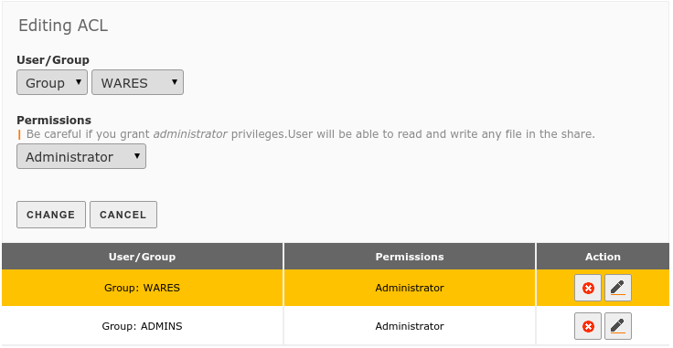
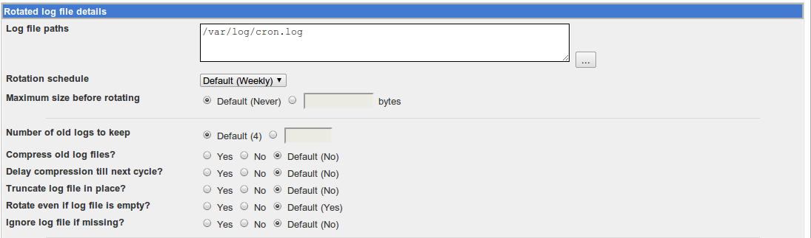

Configuring EDI Communication¶
EDI is a complex application involving data communication, text file manipulation and archival, document translation, and database mapping. This document will describe configuring a Linux machine to exchange data with an ftp server on the web for EDI.
Configure File Access¶
Starting with version 3.0, Zentyal uses Samba 4.0 to provide ACL-based file access permissions for MS-Windows clients. EDI file exchange is handled by a Linux process in the server and not a Windows client, which introduces file access issues.
First, access privileges must be set correctly on the file shares. To verify this, login to Zentyal administration in a browser. On the left menu, select OFFICE ‣ File Sharing. Check the boxes for Apply ACLs Recursively as shown here:
Save changes after this step.
Next change access privileges for the WARES group:
Again, save changes after this step. If file access is confused here, it may be necessary to remove the WARES Access Control and save changes, then re-add the corrected Access Control. From a Windows station, test file access by running the WARES program.
Note
In Zentyal prior to 3.0, use the following console commands to set access permissions on the WARES share:
sudo chgrp -R __USERS__ /home/samba/shares/arev
sudo chmod -R g+s /home/samba/shares/arev
Configure Server FTP¶
The Linux server must have a competent ftp client. Open a console session on the server, and install lftp with the command:
sudo apt-get install lftp
The lftp program will run in non-interactive mode, taking its commands from a
script file. The script file should be saved as /etc/waresedi.conf,
with owner root:root and permissions 600. The text of a sample file
follows:
lcd /home/samba/shares/arev/connect
open -u {uname},{passwd} {ftp://serverURL}
mput -c -E ./snd/* -O ./{OUTBOX}
mget -c -E ./{INBOX}/* -O ./rcv
quit
Schedule Exchange in Webmin¶
For convenience, remap data shares for the root user. Open a console session on the server, and type the following commands:
sudo ln -s /home/samba/shares/shared /S
sudo ln -s /home/samba/shares/wares /W
Next use the browser to login to Webmin at https://officeserver:1000. From the left menu, select System ‣ Schedule cron jobs, and make a job with the following command:
date >> /var/log/cron.log; lftp -f /etc/waresedi.conf 1>> /var/log/cron.log 2>> /var/log/cron.log
For access to work in Zentyal 3.0 and above, add the following at the end of the command:
; chgrp -R wares /W/connect/rcv ; getfacl --access /W | setfacl -M- /W/connect/rcv/*
Schedule the job to run every 15 minutes between 7 am and 7 pm. Test run the job, and check the output with the command:
cat /var/log/cron.log
Finally, manage the log file: System –> Log File Rotation –> Add a new log file to rotate. Accept the default management options for the new log.
